+91 74996 65426


 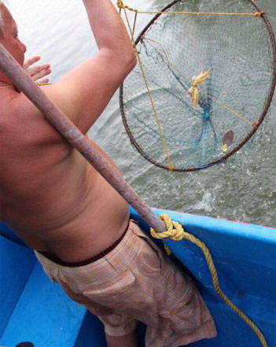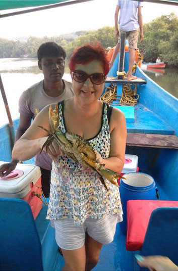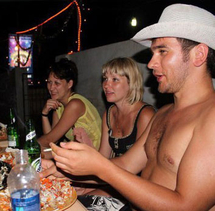
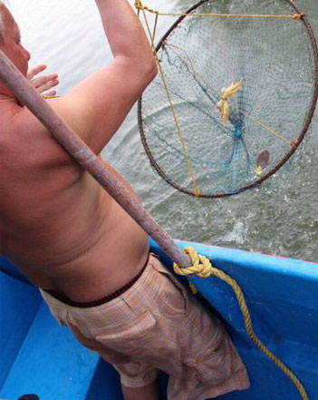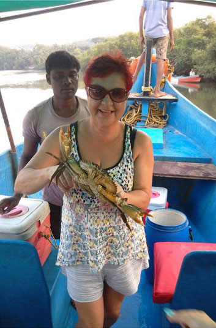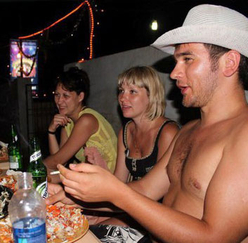 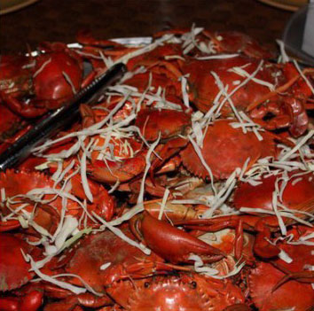
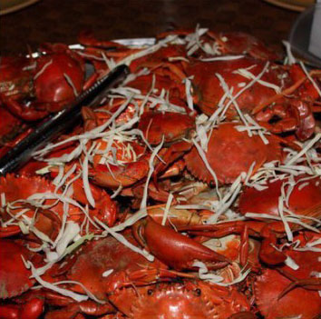 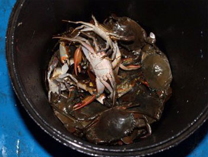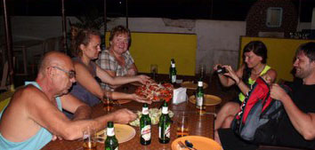
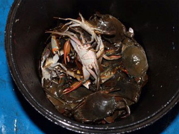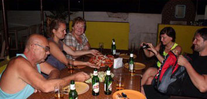
💵 Excursion price:
28$ per person + 1500 rupees transfer to the whole company.
👼 Children under 5 years old - free of charge (without a seat, in the hands of parents).
📅 Held daily.
⏳ From 15:00 to 21:00. Travel time is 30 minutes.
❌ Without a guide.
🌅 Want to take away not only souvenirs and photographs from Goa, but also unforgettable impressions of traveling along the Indian river?
Then sign up for a boat trip along the Nerul River with crab fishing !!
🦠You can see the amazing wildlife of mangroves and catch crabs with your own hands. You will catch them with basket nets, it is exciting and exciting.
🻠On the boat you will be offered drinks, beer, rum.
After catching the crabs, you will go to a cafe where will be cooke and serve your catch.
👩🧑🧑👩 Discounts for a group
👼 Children under 5 years old - free of charge (without a seat, in the hands of parents).
Accepting bitcoin:

3Kznb8Z4skuUZp6rJJTKG91UMz9jn42Yno